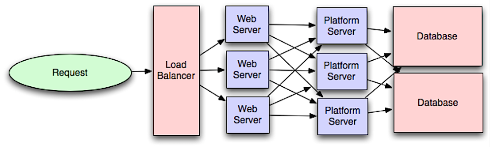

So far you've covered the pieces that get a request to a server. This module is about what's on the other side of the load balancer: the application layer (also called the platform layer) — where the actual business logic runs, separate from the web layer that just handles HTTP.

Separating the web layer from the application layer lets you scale and configure both independently. Adding a new API results in adding application servers without necessarily adding additional web servers. The single responsibility principle advocates for small, autonomous services that work together — small teams with small services can plan more aggressively for rapid growth.
Workers in the application layer also help enable asynchronism, which is Module 09.
Microservices can be described as a suite of independently deployable, small, modular services. Each service runs a unique process and communicates through a well-defined, lightweight mechanism to serve a business goal.
Systems such as Consul, Etcd, and Zookeeper help services find each other by keeping track of registered names, addresses, and ports. Health checks help verify service integrity and are often done using an HTTP endpoint (Module 10 covers HTTP). Both Consul and Etcd have a built-in key-value store (Module 07 covers this) that's useful for storing config values and other shared data.